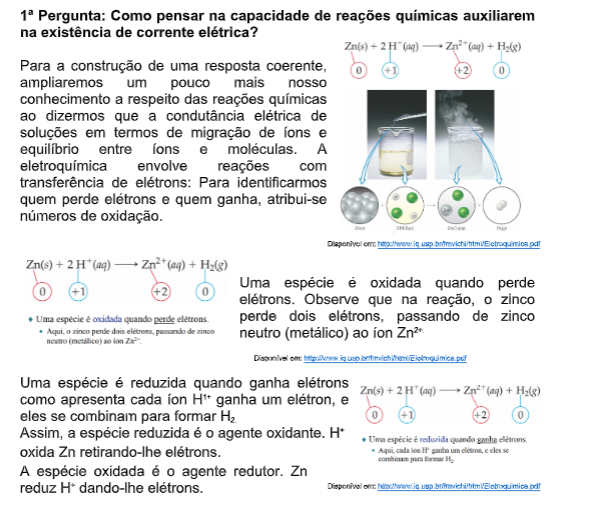

Capítulo 1
A Metalurgia os Óxidos e a Corrosão
Qual a relação destes fenômenos com a Metalurgia? Como ocorre este fenômeno? Existe apenas um tipo de corrosão? Como evitar que móveis e objetos enferrujem na casa de praia?
CONTEXTUALIZANDO
As cidades litorâneas são escolhidas por algumas pessoas para passear, descansar nas férias e até para residir. Porém é preciso ficar atento aos estragos que a maresia pode causar nos artefatos e matérias que ficam expostos a ela causando o que chamamos de corrosão. Os processos corrosivos são espontâneos e ocorre quando o metal entra em contato com os elementos corrosivos existentes na natureza, que normalmente são a umidade, o oxigênio ou substâncias químicas oxidantes que compõem a água do mar, a poeira, ou os gases poluentes. Nas cidades litorâneas que são urbanizadas, a maresia se mistura à poluição, tornando o processo da ferrugem ainda mais intenso. Podemos identificar que a maresia é uma espécie de spray formado por uma infinidade de gotículas de água do mar quando as ondas arrebentam na praia. Estas gotículas formam uma nevoa úmida que paira sobre as cidades litorâneas acelerando o processo de corrosão de objetos metálicos em razão da presença de íons na água do mar.
(Re)Construindo ConceitosCorrosão é um fenômeno natural, definido como a “deterioração de um material, resultante de reações químicas ou eletroquímicas com seu ambiente. Este é um do fenômeno que pode acontecer no cotidiano acarretando a reparação ou troca do material metálico. Denominamos ¨ferrugem¨ apenas o fenômeno que ocorre no ferro e em muitas ligas ferrosas como os aços- carbono quando expostos à atmosfera ou submersos em águas naturais. Como estes aços são os materiais mais utilizados na forma de chapas, placas, barras e tubos, pelas indústrias metalomecânicas e da construção civil, a reação de corrosão é definida como a deterioração de um metal ou liga, a partir de sua superfície, pelo meio no qual está inserido. O processo envolve reações de oxidação e de redução também chamada de redox que convertem o metal ou componente metálico em óxido, hidróxido ou sal. Basearemos nossas atividades em questionamentos.
1ª Pergunta: Como pensar no número de oxidação de um elemento para perceber a oxidação de uma material?Para responder a esta questão, vamos pensar que o "número de oxidação" representa a carga total ou parcial de cada átomo presente numa dada espécie química (átomo neutro, íon ou molécula). Essa carga indica o número de elétrons que se aproximam ou se afastam de cada átomo em decorrência de suas ligações com outros átomos nessa espécie ou, no caso de átomos isolados, o seu saldo de cargas positivas e negativas.
2ª Pergunta: Como devemos organizar este raciocínio para determinar o “número de oxidação” de um elemento químico presente em um material?A construção de uma resposta para esta pergunta passa por ampliarmos nossa noção sobre o “número de oxidação”. Faremos este aprofundamento, utilizando a tabela 1, ao lado pois ela será nossa referência para os exemplo as seguir. Uma observação:
Exemplos: Na 1+: NOX= +1 F 1- : NOX= -1
Veja como usar essas informações para calcular o NOX de vários elementos sempre com base na tabela 1:
3ª Pergunta: Como pensar a respeito da nomenclatura dos óxidos?
Alguns exemplos de óxidos presentes no dia- a- dia são: ferrugem (óxido de ferro III), gás carbônico (dióxido de carbono), cal virgem (óxido de cálcio). Nos óxidos, o elemento mais eletronegativo deve ser o oxigênio. Assim compostos químicos binários como o OF 2 ou O 2 F 2 não são classificados como óxidos, pois possui flúor e, no caso, ele é mais eletronegativo que o oxigênio. Estes compostos são chamados fluoretos de oxigênio.